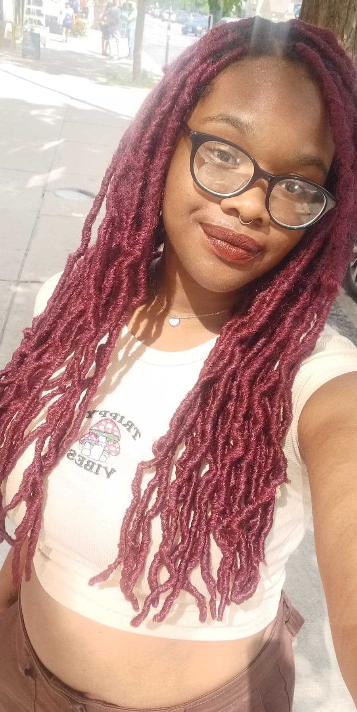
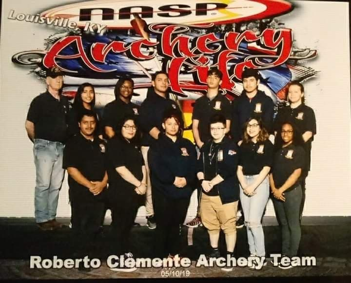
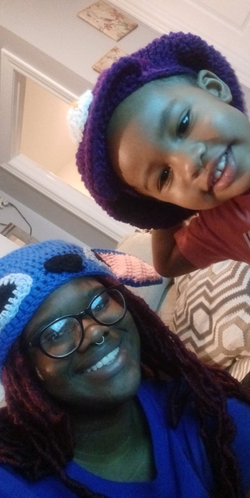

Hello, my name is Marionna Banks and welcome to my site.
I am a second year at Illinois Institute of Technology and I am majoring in Information Technology and Management. I graduated for Roberto Clemente High School in 2021. While in high school, I was a part of Boys and Girls Club and Army JROTC. While in Boys and Girls Club, I was a part of a competition called a hack-a-thon which was a coding competiton they had. Being a part of that competition is what made me want to pursue a career in IT. I was also a part of a submarine contest where we built our own submarines, and I was a member of Keystone where we did a lot of community service and fundraisers. In Army JROTC, I was a part of the archery team for three years. I was also a member of flag detail, the sabre team, color guard, and staff.
For a while, I was an only child until my mom decided to have another kid when I was 16 years old. I now have a 2 year old brother named Durel, who is about to turn 3 in November.
